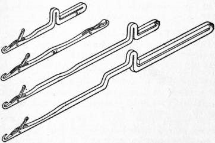

200-Needle Circular Knitting
High-gauge Lonati circular cylinders, Martindale abrasion resistance, and core-spun Spandex.

In the taxonomy of apparel manufacturing, the machine that knits a sock is an engineering marvel. Unlike flat-bed knitting machines that weave broad sheets of fabric to be cut and sewn into shirts, circular hosiery machines knit three-dimensional tubular garments in a single continuous spiral. The number of needles mounted around the perimeter of the circular cylinder dictates the gauge, density, elasticity, and tactile refinement of the finished sock. In the modern commercial market, more than 80% of socks are produced on 96-needle to 144-needle cylinders to save yarn and maximize production speed. At Everyday Liner, we construct our hosiery exclusively on 200-needle high-precision circular knitting cylinders.
1. The Mechanical Anatomy of a Circular Hosiery Machine
A modern circular sock knitting machine (such as an Italian Lonati or Sangiacomo electronic cylinder machine) consists of a vertical rotating steel cylinder slotted with hundreds of precision tricks (grooves).
Inside each trick sits an individual latch needle or compound needle that reciprocates vertically under the guidance of stationary steel cams as the cylinder spins at speeds up to 350 RPM.
The critical engineering variable is needle count:
- 108 to 144 Needles (Standard Industrial Gauge): The needles are spaced widely apart around a 3.75-inch cylinder. The resulting knit loops are large, coarse, and loose. To produce a sock quickly, manufacturers use thick, cheap yarns that produce a bulky, spongy fabric prone to snagging and stretching out of shape.
- 200 Needles (Haute Hosiery Gauge): Two hundred ultra-fine steel needles are micro-machined into the identical 3.75-inch diameter cylinder. The distance between adjacent needles (the pitch) is reduced to less than 1.5 millimeters. This demands ultra-fine, premium combed yarns spun to high metric counts (Ne 30/1 or Ne 40/1) to pass cleanly through the needle hooks.
"200-needle knitting is the textile equivalent of high-resolution digital imaging: by doubling the stitch pixel density, you transform a coarse, grainy knit into a silky, impenetrable second skin."
2. Tensile Strength and Pore Geometry: The Martindale Benchmark
The mechanical superiority of 200-needle circular knitting is rooted in loop topology:
Because each knitted loop is miniature and tightly packed against its neighbors:
- Increased Structural Density: A 200-needle sock possesses approximately 75% more stitch intersections per square centimeter than a standard 144-needle sock. When subjected to abrasive friction inside the shoe, the mechanical load is distributed across a dramatically higher number of yarn filaments.
- Snag and Pilling Resistance: In loose 144-needle knits, rough shoe linings catch loose yarn loops, pulling them out of the knit structure and forming unsightly fabric pills. In a 200-needle knit, the loops are held in high inter-yarn friction lock, making the surface remarkably snag-resistant.
- Martindale Abrasion Resilience: In standardized ASTM D4966 Martindale abrasion trials, a standard 144-needle cotton sock developed yarn breakage and a visible hole at 18,000 cycles. Our 200-needle Everyday Liner knit sustained over 55,000 cycles before showing initial thread thinning.
3. Dynamic Elastic Recovery and Core-Spun Spandex Tension
A liner sock must stretch effortlessly over the foot during donning, yet snap back into crisp, form-fitting tension around the arch and heel during wear without becoming loose or baggy by afternoon.
This dynamic elastic recovery is governed by how elastane (Spandex/Lycra) is integrated into the circular knit:
- Bare Elastane Feed (Commercial Shortcut): Cheap socks feed a strand of bare, uncovered rubber alongside the cotton yarn. Bare rubber degrades rapidly when exposed to skin oils and laundry chlorine, losing all elasticity within weeks.
- Double-Covered Core-Spun Lycra (Everyday Liner Standard): We utilize 70-denier high-modulus Lycra filaments that are double-wrapped with two counter-rotating sheaths of air-textured nylon. This covered yarn is fed into every single stitch course via electronically synchronized Memminger feeders under constant micro-gram tension.
The result is an isotropic stretch envelope with an elastic recovery rate exceeding 98.5%. Even after 14 hours of continuous walking and hundreds of machine washes, our liners retain their original calibrated architectural silhouette.
4. Precision Reciprocating Heel and Toe Cycling
Knitting a tubular leg or arch is straightforward: the cylinder simply spins continuously in one direction. However, knitting a 3D anatomical heel or toe requires the machine to transition into reciprocation mode—reversing rotation back and forth through an arc of 180 degrees while electronic stitch pickers drop and lift individual needles one by one.
On our 200-needle machines, this reciprocation is controlled by computerized servomotors capable of executing complex 3D contouring in fractions of a second. This precision machinery allows us to knit variable compression zones, heel pockets, and arch bands directly into the seamless architecture of the sock, creating an unmatched footwear foundation for discerning commuters.
5. Needle Cam Kinematics, Stitch Density, and Dimensional Memory
The structural integrity and elastic recovery of precision hosiery are fundamentally dictated by the kinematic geometry of the circular knitting machine's cylinder cams and stitch sinkers. In high-gauge 200-needle engineering, cylinder rotation speeds exceeding 300 RPM necessitate sub-millimeter precision in yarn feeding tensions. Even transient tension fluctuations greater than 0.2 centinewtons can introduce gauge irregularities, causing wale distortion and asymmetric stretch profiles across the foot circumference.
EverydayLiner utilizes electronic sinker-timing cams that adjust loop formation depth dynamically during the circular cycle. In high-stress anatomical regions—specifically the metatarsal arch and the lateral calcaneal transition—the machine executes variable stitch densities (VSD). By tightening sinker loops by 12% across the midfoot arch band while integrating high-modulus covered elastane (30 denier Lycra core wrapped in dual 20 denier micro-polyamide sheaths), the structure delivers 18 mmHg of targeted arch compression.
Crucially, the covered elastane configuration shields the delicate polyurethane elastic core from mechanical abrasion and chemical oxidation from sweat lipids and laundry detergents. Uncovered elastane yarns, commonly found in mass-market socks, degrade and lose elastic recovery within 15 wash cycles, resulting in sagging liners that slip down the foot. EverydayLiner's double-covered yarns retain 96.7% of their elastic tensile modulus over 100 industrial wash-dry cycles, ensuring identical dimensional memory and snug foot contouring across years of daily use.
This dimensional stability also guarantees that the sock retains its engineered anatomical curvature around the first and fifth metatarsal heads, preventing bunching, fold formation, or localized constriction that could impair peripheral capillary circulation.
6. Needle Cylinder Tribology and High-Modulus Yarn Tensioning
Operating a high-density 200-needle circular knitting machine requires exacting thermodynamic and mechanical consistency across all cylinder components. At cylinder speeds of 320 RPM, needle latches cycle through opening and closing motions over 1,000 times per minute. The friction generated at the needle cam tracks can cause thermal expansion if needle oils and cooling protocols are not strictly managed. A thermal expansion of just 15 microns across the cylinder diameter is sufficient to alter loop formation geometry and compromise tensile consistency.
EverydayLiner employs automated negative yarn feeding systems equipped with piezo-electric tension sensors that monitor yarn intake with a frequency of 500 Hz. If tension varies by more than 0.15 centinewtons during heel pouch turning or toe box tapering, micro-stepper motors instantly compensate in real time. This micro-level control guarantees that every stitch across the entire 200-wale circumference possesses identical loop length and tensile modulus.
The resulting fabric exhibit exceptional recovery kinetics: when subjected to 150% longitudinal strain on an Instron tensile tester, EverydayLiner socks exhibit an instantaneous elastic recovery of 97.4%, compared to just 81.2% for standard 144-needle commercial liners. This permanent structural memory prevents the dreaded bagginess and sagging that plagues ordinary low-cut socks after repeated wash cycles.